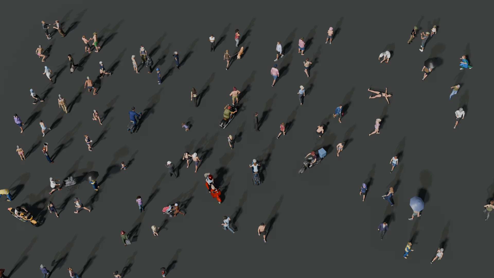

People Generation v2BETA
Every person in our frames is written before it is rendered.
A sentence first — who they are, what they wear, what they are doing, drawn for the place, its climate and the season — then a body, clothes, a pose and the things in their hands. Ask again, and the crowd is new.
- people written
for one map - 6,290
- poses from
motion capture - 3,110
- fields to write
one person - 40
02
How a person is built
step 1 of 8
Written as
- 01
Body
One of 125 bodies — 115 Rocketbox avatars and 10 MakeHuman bodies — chosen by the words: sex, age, height, what they wear on top.
- 02
Head
Another avatar's head, cut at the neck and fitted to this body's skeleton.
- 03
Build
Slim, average, stocky or heavy: the body's shape keys, checked so that no hand ends up inside the belly.
- 04
Colour
Every garment recoloured into the colour its words ask for, from palettes measured on real clothes; the skin toned with it.
- 05
Hijab
Grown on this head, column by column around the face, then coloured. Checked before it goes on: no gap at the cheeks, nothing through the clothes.
- 06
Backpack
Fitted to the shoulders it sits on, its straps bound to the body so they move with it.
- 07
Pose
One of 3,110 poses from motion capture, or an authored one, chosen by what the words say she is doing.
- 08
The things in the hands
What the words say the hands hold, placed in the hand the pose closes round it.
09Checked, before any map sees them
03
The wall
2,000 people · nobody twice
04
From a photo to a person
01 / 10
A real person, written in words, rebuilt by the generator.
85% of the real people we described can be built from what a drone sees.1
In words
The same fields we write every generated person with. What a drone cannot see is left to the generator.
: the photo's person and ours, as a drone sees them.
05
Before and now
Before, 115 avatars in 35 poses, four of them children made by shrinking adults. Now, everyone written anew.
Before
v2 · nobody twice
06
The labels know the words
Every box opens into the sentence that wrote the person inside it.
Masks and boxes come from the render itself; each person's words come from the recipe that built them. Point at a person.
07
Where v2 is going
this page is BETA
- Goal for v2.0
- 99%
- Goal for v2.0
- Clothes from every region we fly
- Goal for v2.0
- A new cast in every frame of every map
of the people a drone sees, buildable from words.
long robes, saris, uniforms, work clothes, and what comes next.
nobody twice, on any map we render.
BETAEverything on this page runs today; the previews come from test renders. The goals above are what v2.0 ships with.
08
Sources and credits
Bodies and motion
Microsoft Rocketbox avatars · MIT
MakeHuman and MPFB assets · CC0 and CC BY
CMU Graphics Lab motion capture · free for all uses
Things and textures
Objaverse and Sketchfab models · each with its author and licence
ambientCG textures · CC0
Archivo, IBM Plex Mono · SIL OFL
Real photographs
Wikimedia Commons, each with its author and licence.
Every model a person on this page can wear, carry or ride, with its author
¹ 427 real people in drone photos — 327 from Wikimedia Commons, 100 from the VisDrone training set — each described in the same 40 fields from what a drone can see; 85% pass every rule and have every piece the generator needs.